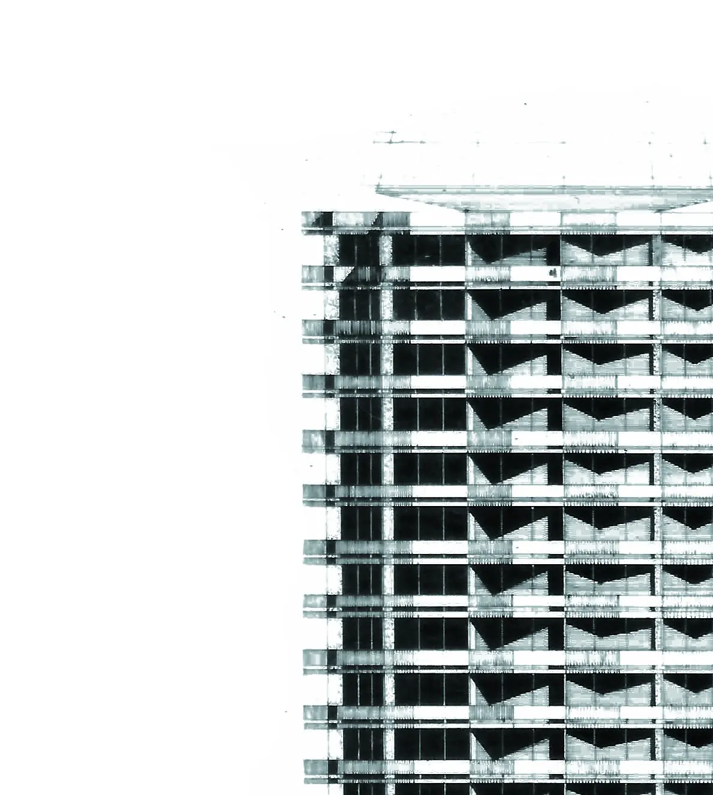

յոթ գլուխсемь главseven chapters
Կուկուրուզնիկի պատմությունըИстория КукурузникаThe Corncob's Story
Ինչպես կոնսերվի կափարիչներից մակետը դարձավ Երևանի ամենաճանաչելի շենքերից մեկը, իսկ հետո՝ բացատ Աբովյան փողոցի վրա։ Как макет из крышек от консервных банок стал одним из самых узнаваемых зданий Еревана — а потом пустырём в центре города. How a model built from tin-can lids became one of Yerevan's most recognizable buildings — and later an empty lot downtown.
01
Ասես բոլոր մայրաքաղաքներում մեկըТакой же, как во всех столицахOne in every capital
1970-ականների կեսերին խորհրդային իշխանությունները որոշեցին բոլոր հանրապետությունների մայրաքաղաքներում կառուցել երիտասարդական պալատներ՝ վայրեր, որտեղ երիտասարդությունը կհանդիպի, կզբաղվի սպորտով և արվեստով։ Երևանինը պիտի կանգներ Աբովյան փողոցի վրա գտնվող բլրի վրա, քաղաքի կենտրոնում։
В середине 1970-х советские власти решили построить дворцы молодёжи в столицах всех союзных республик — общее пространство, где молодёжь могла бы собираться, заниматься спортом и творчеством. Ереванскому досталось место на холме у улицы Абовяна, почти в центре города.
In the mid-1970s, Soviet authorities decided to build a "Youth Palace" in the capital of every republic — a shared space where young people could gather, play sports and make art. Yerevan's was given a hilltop site on Abovyan Street, close to the city centre.
02
Մակետը կոնսերվի կափարիչներիցМакет из крышек от банокA model made of tin lids

Նախագիծը վստահվեց երեք ճարտարապետների՝ Արթուր Թարխանյանին, Հրաչ Պողոսյանին և Սպարտակ Խաչիկյանին։ Նրանք արդեն աշխատել էին միասին և հետո ևս աշխատելու էին՝ Զվարթնոց օդանավակայանի, «Ռուսաստան» կինոթատրոնի շենքերի վրա։ Ցուցադրելու գումար չլինելու պատճառով մակետը հավաքեցին ինչ որ կար ձեռքի տակ՝ պահածոների կափարիչներից և թղթից. հենց այդպիսի լուսանկարով էլ ներկայացրին նախագիծը հաստատողներին։
Проект поручили трём архитекторам — Артуру Тарханяну, Грачу Погосяну и Спартаку Хачикяну. Они и до этого работали вместе, и потом ещё не раз — на здании аэропорта «Звартноц», на кинотеатре «Россия». Показать заказчикам масштаб будущего здания было особо не на чем, поэтому макет собрали из того, что было под рукой — крышек от консервных банок и бумаги, — и с фотографией этого макета пришли утверждать проект.
The project was given to three architects — Artur Tarkhanyan, Hrach Poghosyan and Spartak Khachikyan — who had already worked together before and would again, on the Zvartnots airport terminal and the Rossiya cinema. With nothing proper on hand to show the building's scale, they built a model out of tin-can lids and paper, and brought a photo of it to the people who had to approve the project.
03
Աշտարակ, որը պտտվում էБашня, которая крутитсяA tower that spins

Համալիրի սիրտը գլանաձև աշտարակն էր՝ մոտ 58 մետր բարձրությամբ, 24 մետր տրամագծով։ Վերևի հարկը պտտվում էր առանցքի շուրջ՝ ժամում մեկ պտույտ, և հենց այնտեղ էր «Յոթերորդ երկինք» սրճարանը՝ մոտ հարյուր տեղով և Երևանի համայնապատկերով։ Շուրջբոլորը՝ հյուրանոց, ռեստորան, լողավազան, գիշերային ակումբ, մարզադահլիճ, ամուսնությունների գրանցման դահլիճ գունավոր ապակիներով և համերգասրահներ։ Դռները բացվեցին 1979 թվականի ապրիլին։
Сердцем комплекса стала цилиндрическая башня высотой около 58 метров и диаметром 24 метра. Верхний этаж вращался вокруг оси — один оборот в час, — и там же работало кафе «Седьмое небо» примерно на сто мест с видом на весь Ереван. Вокруг башни — гостиница, ресторан, бассейн, ночной клуб, спортивный зал, зал регистрации браков с витражами и концертные залы. Двери открылись в апреле 1979 года.
At the heart of the complex was a cylindrical tower roughly 58 metres tall and 24 metres in diameter. Its top floor rotated around the axis once an hour, home to the "Seventh Heaven" café — about a hundred seats with a view over all of Yerevan. Around the tower stood a hotel, a restaurant, a pool, a night club, a sports hall, a stained-glass wedding hall and concert halls. It opened its doors in April 1979.
04
Քաղաքի սիրտը մի ամբողջ տասնամյակСердце города на десять летThe city's heartbeat for a decade

Մուտքի մոտ միշտ հերթեր էին լինում։ Ինչ-որ մեկն այնտեղ պարում էր դիսկոտեկում, ինչ-որ մեկը գնում էր առաջին ժամադրության, ինչ-որ մեկն ամուսնանում էր հենց նույն օրը հարկից ներքև։ Այնտեղ էր գործում ԽՍՀՄ-ում առաջին պաշտոնապես թույլատրված դիսկոտեկը, հնչում էին ժամանակի ամենահայտնի խմբերի ձայնագրությունները, և հենց այնտեղից են սկիզբ առել հայկական ռոք-երաժշտության շատ պատմություններ։
У входа почти всегда стояла очередь. Кто-то шёл на дискотеку, кто-то — на первое свидание, а этажом ниже в тот же вечер кто-то расписывался в загсе. Здесь работала первая официально разрешённая дискотека в СССР, крутили записи самых модных групп, и с этим местом связана добрая часть истории армянской рок-сцены.
There was almost always a line at the entrance. Someone was headed to the disco, someone was on a first date, and a floor below, someone else was getting married that same evening. It housed the first officially sanctioned disco in the USSR, played the most fashionable bands of the day, and its story is woven into a good part of Armenian rock music history.
05
Ապաստան դժվար տարիներինУбежище в трудные годыA shelter in hard years

Խորհրդային Միության փլուզումից հետո շենքը սկսեց աստիճանաբար քայքայվել։ 1988 թվականի Սպիտակի երկրաշարժից և 1990-ի իրադարձություններից հետո մի քանի տարի այն ծառայեց որպես ապաստան երկրաշարժից տուժածների և փախստականների համար։ Այն, ինչ մի ժամանակ քաղաքի ամենակենսունակ վայրերից էր, կապվեց լքվածության հետ. ոչ ջեռուցում, ոչ լույս, դատարկ սրահներ։
После распада СССР здание постепенно приходило в упадок. После Спитакского землетрясения 1988 года и событий 1990-го несколько лет оно служило убежищем для пострадавших от землетрясения и беженцев. Место, которое ещё недавно было одним из самых живых в городе, стало ассоциироваться с заброшенностью — без отопления, без света, с пустыми залами.
After the Soviet collapse, the building slowly fell into disrepair. Following the 1988 Spitak earthquake and the events of 1990, it served for several years as a shelter for earthquake survivors and refugees. A place that not long before had been one of the liveliest in the city came to be associated with abandonment — no heating, no electricity, empty halls.
06
Վաճառքը, թույլտվությունը, բուլդոզերըПродажа, разрешение, бульдозерSold, permitted, demolished

2004 թվականին շենքը վաճառվեց մասնավոր ներդրողի։ 2005 թվականի հոկտեմբերին Երևանի քաղաքապետարանը թիվ 40 որոշմամբ թույլատրեց քանդումը՝ պաշտոնական պատճառը սեյսմակայունության հարցերն էին։ Որոշ մասնագետներ և բնակիչներ դեմ էին քանդմանը, սակայն 2006 թվականին շենքը վերացվեց։ Փոխարենը խոստացված նոր հյուրանոցը երբեք չկառուցվեց. տարածքը երկար մնաց դատարկ։
В 2004 году здание продали частному инвестору. В октябре 2005-го мэрия Еревана постановлением №40 разрешила снос — официальной причиной назвали вопросы сейсмостойкости. Часть специалистов и жителей города были против, но в 2006 году здание всё же снесли. Обещанная новая гостиница на его месте так и не появилась — участок долго простоял пустым.
In 2004 the building was sold to a private investor. In October 2005, Yerevan City Hall issued permit No. 40 authorising demolition, citing seismic safety as the official reason. Some experts and residents objected, but the building was torn down in 2006 regardless. The new hotel that was promised in its place was never built, and the lot stood empty for years.
07
Խոսակցություններ վերականգնման մասինРазговоры о восстановленииTalk of rebuilding it
2023 թվականին հասարակական նախաձեռնություն՝ Արթուր Թարխանյան կենտրոնի մասնակցությամբ, հայտարարեց մտադրության մասին՝ վերականգնել Երիտասարդական պալատը հենց նույն տեղում, արտաքինով նման բնօրինակին, բայց ժամանակակից ինժեներական լուծումներով։ Այդ պահին նախագիծը դեռ գտնվում էր նախնական փուլում, իսկ լավատեսական գնահատականով շինարարությունը կպահանջեր մոտ չորս տարի։ Ավելի թարմ հաստատված տեղեկություն այս էջը գրելու պահին չկա. այսինքն՝ հայտնի է հենց նախաձեռնության հայտարարման փաստը, առայսօր չի հաստատվել, թե ինչ վիճակում է գտնվում այն հիմա։
В 2023 году общественная инициатива, в которой участвует Центр Артура Тарханяна, заявила о намерении восстановить Дворец молодёжи на том же месте — внешне похожим на оригинал, но с современными инженерными решениями. На тот момент проект находился на предварительной стадии, а по оптимистичной оценке на стройку ушло бы около четырёх лет. Более свежих подтверждённых данных на момент написания этой страницы нет — известен сам факт объявления инициативы, а не то, в каком состоянии она находится сейчас.
In 2023, a public initiative involving the Artur Tarkhanyan Center announced plans to rebuild the Youth Palace on the same site — similar in appearance to the original, but with modern engineering. At the time, the project was still at a preliminary stage, with an optimistic estimate of around four years of construction. There is no more recent confirmed information as of writing — only the fact that the initiative was announced, not its current status.
ԱղբյուրներИсточникиSources
Փաստերը վերապատմված են իմ իսկ բառերով՝ առանց հոդվածների տեքստը կրկնօրինակելու։
Факты пересказаны своими словами, без копирования текста статей.
Facts are retold in my own words, without copying the text of the articles.
- tarkhanyancenter.am/youth-palace
- evnreport.com — «The Youth Palace: Yerevan's Beloved Ghost»
- armenianbd.com
- architectuul.com